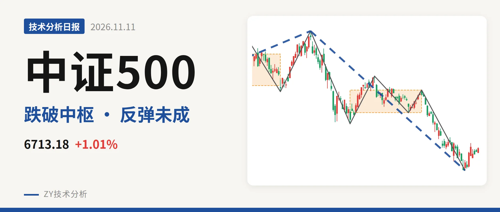
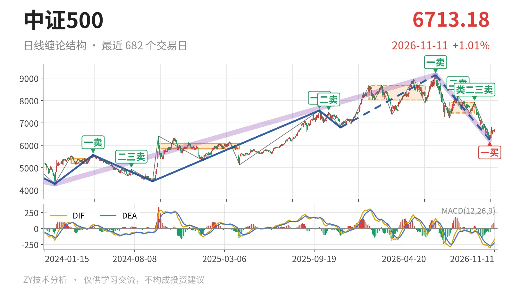

中证500｜反抽未回7451点，结构仍偏弱

最近日线中枢 7451.12—7922.62点，收盘位于中枢之下
一句话：日线仍在中枢下方，11月2日一买后反弹弱，反抽看7451点。
📉 走势结构：7月以来下跌段仍在延续
日线当前仍处于7月1日一卖9147.56点之后的下跌段中，7月1日至11月2日的日线下跌线段还没有结束。该段低点由7月30日的7221.95点下移至9月11日的7451.12点，再下移至11月2日的6253.79点。11月3日至11月11日最高反弹到6819.12点，只有7根K线，尚未构成反向日线笔，弱反抽性质未变。更大级别上，7月1日至11月2日这段下跌跌约31.6%，也在延续。

🧭 中枢与位置：跌破最近中枢下沿，反抽未回
最新收盘6713.18点在最近日线笔中枢7451.12—7922.62点下方，低于下沿约9.9%。该中枢由7月30日至9月22日的三笔重叠形成，中轴7686.87点。自9月22日跌破后，价格一直未能回到中枢内部。日线笔中枢从1月26日至6月8日的8014.66—8671.35点下移至当前的7451.12—7922.62点，属于中枢下移。11月3日以来反弹高点6819.12点，距离下沿7451点还差632点。
🔗 买卖点：日线卖点一个比一个低，一买后未成笔
日线笔级别上，7月1日一卖9147.56点、8月18日二卖8211.31点、9月22日类二三卖7922.62点，卖点一个比一个低。11月2日形成一买6253.79点，所在下跌笔9月22日至11月2日已经结束。但11月3日以来反弹尚未构成反向日线笔，因此一买之后的转折结构还比较弱。后续若跌破6253点，这个一买对应的转折就只能停留在更低级别。

⚡ 背驰：价格新低，绿柱面积未同步放大
最关键的一组同向比较，是7月1日至7月30日与9月22日至11月2日两段日线下跌笔。后者把价格打到6253.79点，低于前者的7221.95点；但绿柱面积由2687缩至1782，DIF低点仅由-285.2小幅下移至-295.6。价格新低而绿柱面积没有同步放大，属于“新低不新强”的面积背驰。不过DIF低点还在下移，背驰并不标准，只能说明下跌力度在减弱，尚无强转折确认。
🔎 关键位置观察：反抽若回不到7451点，中枢下方结构偏弱
最近中枢下沿7451点一线是短期结构分界。若反抽持续回不到7451点上方，9月22日离开中枢后的回抽结构上构成日线三卖，下方关键位是11月2日低点6253点附近。若重新站上7451点，则7月30日以来的下跌更可能只是中枢扩展，而非单边下移。下方再观察2016年1月27日至2017年9月12日的线段中枢5655.76—6692.14点，最新收盘6713.18点仍在其上沿6692点上方，距离不远。总体看，一买后反抽未成笔，价格仍在最近中枢下方，结构偏弱。
⚠️ 本文为基于公开行情数据的缠论技术结构记录，由程序自动计算并生成，仅供学习交流，不构成任何投资建议。市场有风险，投资需谨慎。